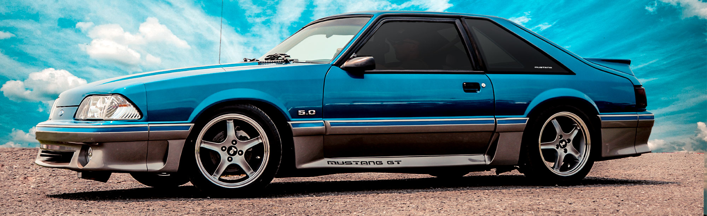
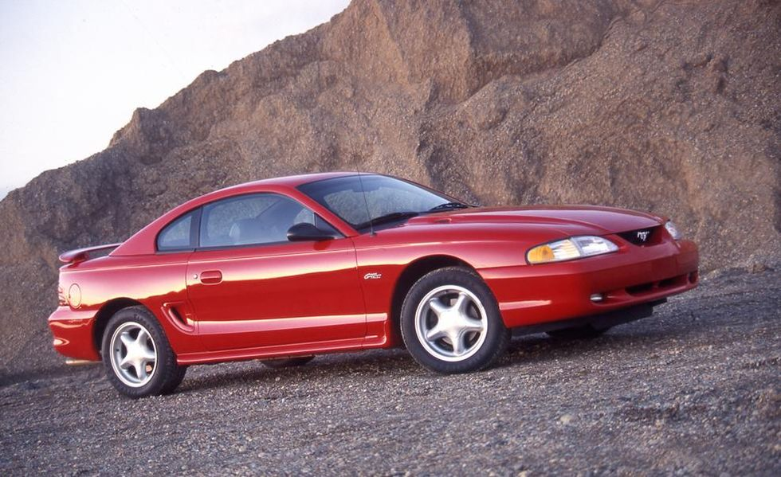
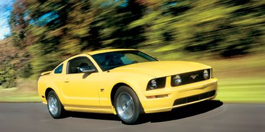

The Ford Mustang started as a pony car, however over time it evoled into the muscle car we know today.
Carol Shelby was one the driving forces behind this change, releasing modified Mustangs that were
designed to perform at the track. This created a culture of "Win on Sunday, buy on Monday". Americans
would see these "Hot" models dominate racing on the weekends and would want to buy the street versions
for themselves.
Ford Motor Company took advantage of this new generation of speed and power in America
and released attractive models such as "The Boss". Larger, and more poweful than the early pony cars
these models also had aggressive styling and high-impact paint schemes.
Following the late 70's America saw a sharp decline in muscle cars due to high fuel costs
and increasing emissons standards in the US. This saw a change in the Mustang, the "Areo" era.
starting with the "Fox-body Mustangs"of the 80's, and ending with the "Round-body" Mustangs of the 90's
These models focused on emissons and to an extent fuel economy, however they brought many new innovation.
Fuel Injection, Anti-Lock Brakes, Air-bags, and Safety Improvments.


The new millennium brought back the spirit of the Mustang to its former glory, advances in technology was able to blend
raw power with emissons and fuel economy. The Mustang went from 215hp to 400+hp in just a few years,
with Shelby models exceeding 800hp. This new era also saw the return of the iconic Mustang styling with a modern touch. Starting in 2018 standard GT models saw a bump to 460hp and became
handling focused, now sporting independent rear suspension for the first time.
